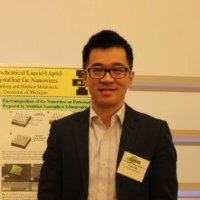

2015 MGCC Written Case Competition
Thank you for participating in the MGCC Written Case Competition, please look forward to the competition next year.
General Information
We would like to congratulate our winners for the competition:
Written Case Competition, First place:

Team FusionYo: Bo Bi, Yan Chang, Weidong Chen
Written Case Competition, Second place:
Company X: Thomas Corey Custer
Written Case Competition, Third place:
Chong and Rajora Consultants: Shubham Rajora and Alex Chong
2015 Sponsors
This competition is possible through the generous sponsorship by:


2015 Event Board

Ha Nguyen
Event Chair
Ha is currently a Ph.D. candidate in Civil Engineering at University of Michigan. She has a strong passion for efficiency,
sustainability, and innovation, especially the link between various disciplines for a greater
impact. She would like to work in consulting, where she can constantly improve her knowledge
and skills and solve challenging real-world problems. She sees herself as an entrepreneurial
strategist with a mixed ENFJ/INTJ personality.
As a cultural learner, Ha loves working in a diverse and dynamic environment. Her ideal teamwork style is to collaborate with people from different backgrounds and perspectives, and to encourage creativity, critical thinking, and constructive criticism. Besides research and classes, she likes organizing events and involving in leading student organizations. Her hobbies include healthy cooking/baking, outdoor, experiential traveling, and dancing.
Connect with Ha on
As a cultural learner, Ha loves working in a diverse and dynamic environment. Her ideal teamwork style is to collaborate with people from different backgrounds and perspectives, and to encourage creativity, critical thinking, and constructive criticism. Besides research and classes, she likes organizing events and involving in leading student organizations. Her hobbies include healthy cooking/baking, outdoor, experiential traveling, and dancing.

Jeremy Lapham
Member Judge
Jeremy Lapham is a member of the Co-Op as serves as a member judge for the competition. Jeremy is a registered nurse and
family nurse practitioner with over ten years experience in the health care delivery system.
He has acquired clinical experience in a variety of health care settings including: emergency
care, urgent care, occupational health, international health care, quality improvement, team-training,
clinical education, curriculum development and evaluation, and organizational research. MGCC
wants to recognize Jeremy’s commitment to this competition and for connecting us with the
food co-op.
Connect with Jeremy on
Rosemarie Figueroa
Co-Chair
Rose is a Ph.D. Candidate in the Department of Industrial and Operations Engineering. Her research interests include physical
ergonomics and biomechanics, and her thesis work focuses on developing a 3D scalable hand
model using technology such as CT-Scans to prevent, identify and control injury risk factors.
She has worked for companies such as Nissan, Medtronic, GE, GM, Applied Safety and Ergonomics.
Outside the lab Rose is a food and craft beer enthusiast, and loves to cook authentic Puerto
Rican and Mexican dishes. She is a top amateur/semi-pro pool player, a Certified Beer Hunter
at Ashley’s-Ann Arbor (tasted 120+ craft beers) and was a gymnast for 12 years earning first
place (balance beam apparatus) in multiple PR national competitions. She is also the president
of the Human Factors and Ergonomics Society at the University of Michigan, Co-Chair of the
Diversity Committee of the American Society of Biomechanics and a member of Society of Hispanic
Professional Engineers, Alpha Pi Mu and Tau Beta Pi.

Luyao Ma
Co-Chair
Luyao is a Ph.D. candidate in the Chemistry Department. His research interest includes developing low-temperature production
methods for solid-state semiconductors that can be utilized in electronics and solar cells.
He is passionate about both the scientific and business side of technologies related to renewable
energy, advanced materials, computer science and bio-medicine. Luyao is seeking a career
where he can utilized his leadership, communication and problem solving skills as well as
strong technical background to tackle some of the world’s most exciting and complicated problems.
Luyao enjoys playing soccer in his free time. He developed a strong team spirit and passion for winning in those soccer games. He also loves traveling. He is looking forward to travel to South America and Africa in the near future.
Connect with Luyao on
Luyao enjoys playing soccer in his free time. He developed a strong team spirit and passion for winning in those soccer games. He also loves traveling. He is looking forward to travel to South America and Africa in the near future.